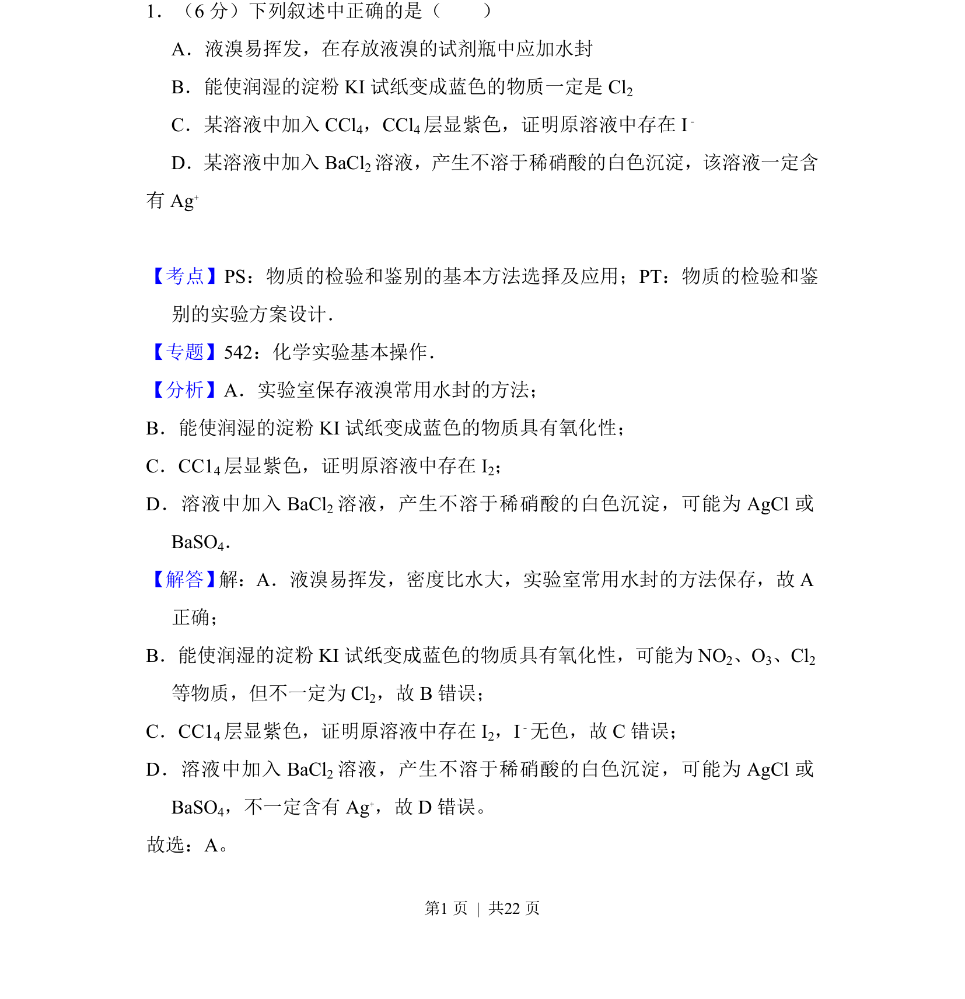
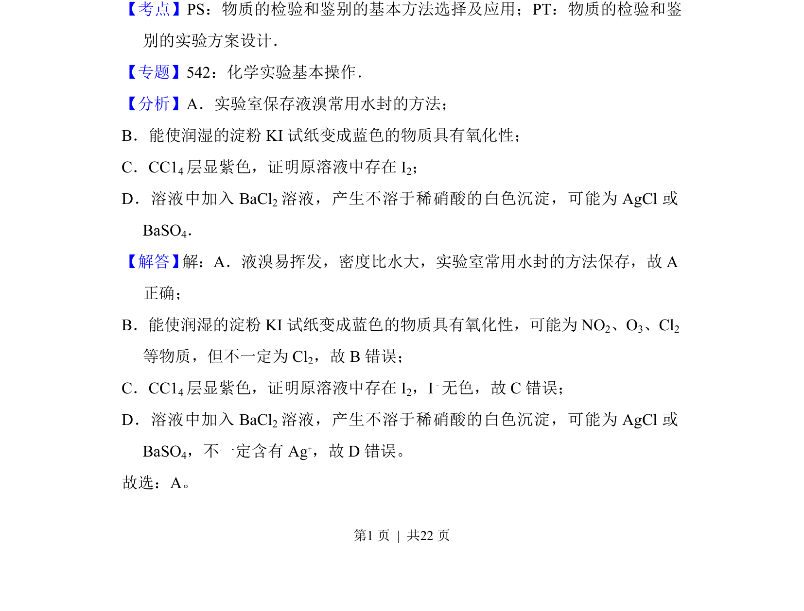
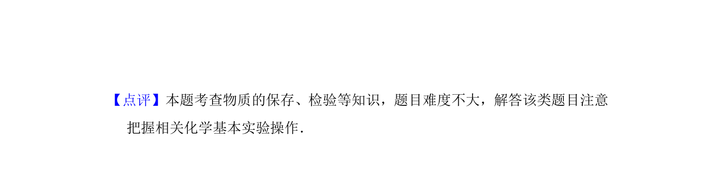

考点：物质的检验与鉴别 实验方案设计 试剂保存

该题考查常见物质的保存方法及离子检验的正误判断，涉及液溴保存和物质鉴别。


📄 原 PDF 第 1 页：
素材/真题/吉林/2008-2024·（吉林）化学高考真题/2012年高考化学试卷（新课标）（解析卷）.pdf
1．（6分）下列叙述中正确的是（ ） A．液溴易挥发，在存放液溴的试剂瓶中应加水封 B．能使润湿的淀粉KI试纸变成蓝色的物质一定是Cl 2 C．某溶液中加入CCl 4，CCl4层显紫色，证明原溶液中存在I ﹣ D．某溶液中加入BaCl 2溶液，产生不溶于稀硝酸的白色沉淀，该溶液一定含 有Ag +
【考点】PS：物质的检验和鉴别的基本方法选择及应用；PT：物质的检验和鉴 别的实验方案设计．菁优网版权所有 【专题】542：化学实验基本操作． 【分析】A．实验室保存液溴常用水封的方法； B．能使润湿的淀粉KI试纸变成蓝色的物质具有氧化性； C．CC14层显紫色，证明原溶液中存在I 2； D．溶液中加入BaCl 2溶液，产生不溶于稀硝酸的白色沉淀，可能为AgCl或 BaSO4． 【解答】 解：A．液溴易挥发，密度比水大，实验室常用水封的方法保存，故A 正确； B．能使润湿的淀粉KI试纸变成蓝色的物质具有氧化性，可能为NO 2、O3、Cl2 等物质，但不一定为Cl 2，故B错误； C．CC14层显紫色，证明原溶液中存在I 2，I﹣无色，故C错误； D．溶液中加入BaCl 2溶液，产生不溶于稀硝酸的白色沉淀，可能为AgCl或 BaSO4，不一定含有Ag +，故D错误。 故选：A。